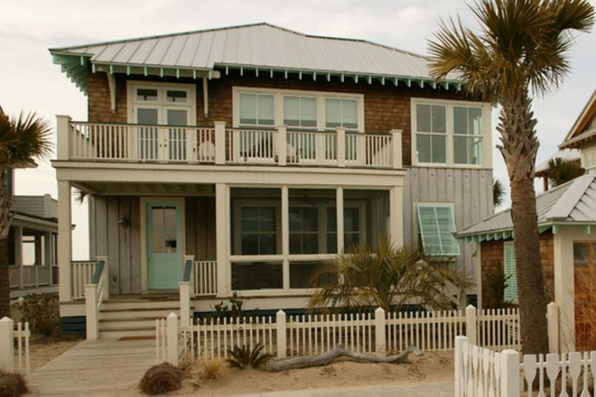

.png)
.PNG)
.PNG)
.PNG)
.PNG)
.PNG)
.JPG)
.JPG)
.PNG)
.PNG)


source
A few days ago we looked at the sites from the movie version of Nicholas Sparks’ novel, The Last Song. It seems that many of Sparks’ novels are set along a waterway in North Carolina…The Guardian, Safe Haven, Message in a Bottle,Dear John, Nights in Rodanthe…all river or beach areas in North Carolina, but when these novels are made into movies, they don’t always film in the actual setting of the book. Take for example Message in a Bottle – set on the coast of North Carolina but filmed in Maine. (My post shows it here.) And The Last Song – also with a coastal North Carolina setting but filmed on Tybee Island in Georgia. Safe Haven was one of the Sparks’ movies that was filmed in the actual setting from the novel, Southport, North Carolina, and Southport is where you catch the ferry to get to here…
Bald Head Island. We have never traveled to this little island where transportation is by golf cart, but I have always wanted to make a trip there. The house I’d like to share with you today is located there, and I think it would be the perfect setting for a story by Nicholas Sparks.
It has traditional coastal shingle and board and batten siding on the exterior, and it is perched on a sand dune. Can’t you just picture a handsome character walking up those steps? (and if it is a Nicholas Sparks’ book, it is probably raining!)
Here is the area approaching the house. The earthy tan and dark green colors seem to fit the mood of a romantic novel as well.
I love how the rafters and porthole window give the house an old fashioned North Carolina beach look.
And the shutters also add to that vintage effect.
Then come inside to the kitchen with its beautiful cabinetry and an even more beautiful view.
I have shown you professional photos of the house from the architectural firm’s site and from Houzz. Now here are a couple of shots from the rental agency that handles the house on Bald Head Island. They are not as styled as the others are.

Here is a closer look at the view out the window above the sink. What a place to do the dishes!
And looking out the window on the other side you can see the marina.
Now take a look at the dining area in the great room…very simple decor that does not distract from the view nor the architectural beauty of the ceiling. I’m also noticing the X pattern on the chair backs matches the X pattern on the porch railing right outside.
As I was studying the pictures of this house, I kept thinking I had seen it loooong ago in Coastal Living magazine, and after hours of searching I found it…yes, it had appeared in Coastal Living. 🙂 Amazing what a difference styling and photo editing make.
Here is a view of the seating area that faces the fireplace (again from the rental agency site.)
There is a graceful stairway, and you can see the porthole window above a desk.
There are 4 bedrooms in the house, but currently one appears to be used as a sitting room with a sleeper sofa.
And there are 3 bathrooms (but I have only found a photograph of one.) It has another corner of windows looking out on the water. The architect, Don Duffy, said that all those glass corners were a challenge for the builder, but he did a wonderful job with them.
The last room of the house I want you to see is the porch…the perfect setting for a romantic scene in a Nicholas Sparks’ book.
Wouldn’t you love to be sitting out there in one of those chairs reading a novel?
sigh….
Before I go, I want to tell you a few more things related to Nicholas Sparks. First, you can read an interview that Southern Living did with him here.
Secondly, Walmart has declared May to be Nicholas Sparks Month, and they are having specials on his novels all month. So if you want to pick up any copies of his books, now is a good time to do it. And finally, (and this is the big one!) there is a Facebook live chat with him on Thursday, 5/8/14 at 8:00 p.m. ET! Mark your calendar. You can find all the details here. You got all that?? 🙂
So, do you think my NC beach house would make a good setting for a Sparks’ book and movie?
What do you think?


.PNG)
This house would make a perfect setting for a Nicholas Sparks movie! This house has the perfect white kitchen and water views…I would do dishes everyday…all day!!! LOL.
I would love to vacation here and definitely after seeing the movie Safe Haven, think I would like to check out Southport as well.
Of course this house would be perfect for one of Nicholas Sparks books! It is lovely and I love the colors of it! Thanks for sharing it with us, Kelly!
What a lovely house…I could look out that kitchen window forever. We live in North Carolina and every June we go to Emerald Isle ( southern Outer Banks area) with all the kids and grandchildren. I am so ready to go!
Kelly, I am still not getting the e-mail of new posts. I resubscribed and you did something and I got a notification that I was subscribed….but still no notice of new posts. I see that Judy wrote in the above comment that she is having the same issue. Any ideas?
———————————————————————-
What a fun trip that must be to be at the beach with everyone! I am ready to go to the beach too. It has been downright hot here the last couple of days.
Martha, I’m afraid I don’t know what to do at this point about the emails. You must have left your comment before I wrote my reply to Judy’s. Check back at her comment and you will see my lengthy reply. The problem stems from something much bigger than just the blog feed, and everyone in blog land is having this occur. If you had a gmail account to use for an email address, I have heard that might help…but I do not know for sure…and that is more trouble to have to go through. I just hate this for everyone. Maybe the brilliant folks at Feedburner will come up with an idea since they are losing so many accounts due to this. Thanks for checking the blog for an update and for leaving your comment. 🙂
Kelly
Oh, more pretty beach pictures!!! My brother’s first job after graduating from college was on Bald Head Island. I always thought it was cool that he had to take a water taxi to and from work. Me,on the other hand, got kinda sea sick on the one and only time I visited him on the job. I remember that we had fun checking out the areas that were believed to hide Black Beard’s treasures.
Keep these dream worthy posts coming!!!
———————————————————————
Yep, more beach houses..you know these are coming since summer is on its way. 🙂 How fun to have a job there on Bald Head Island! I didn’t think about the seasickness…oh dear! Not fun. Black Beard’s treasure – did you know that one of the streets there is named Edward Teach?
Kelly
Well, I just spent a lovely few minutes looking at the home rentals on Bald Head, they were all just stunning. I wonder how many live there year ’round because I don’t think I’d ever want to leave there. (I’ve always thought the geographic locales had a starring role in movies based on Spark’s books. They are always places you just want to visit, or live in.)
————————————————————————
Oh yes, there are many beautiful homes there! You could spend hours on their site checking out all the rentals, and then there are the real estate listings too. Such fun! I wonder if it is like Seaside with very few actual year round residents, and I agree with you about the towns having starring roles in those movies. Makes it nice for those of us who love the eye candy of the homes and setting!
Kelly
What a neat place! One of my twins will be starting grad school in Wilmington this fall at UNC–which is only about 30ish miles from Southport. I will most definitely have to visit there to check out the scenery and sites from Safe Haven and perhaps take the ferry to Bald Head Island as well! What’s a mom for, if not to visit–often? 😉 Especially to an area so beautiful and full of side trip possibilities!
———————————————————————–
Oh you poor thing, Amy…having to go visit such places. Ha! My husband has been on mission trips to Wilmington several times, and he says that I will love the area. Hope to get there one day too. Lucky lucky you!
Kelly
The Notebook wasn’t filmed in Maine – I think you meant Message In A Bottle. The Notebook was filmed in my hometown of Charleston. My girlfriends and I stalked the set for weeks for glimpses of Ryan Gosling! I have a picture of his ear so I consider it time well spent!!
———————————————————————
Oops! Your’re right. Correcting that! When you are working on posts after midnight that is what happens, and to think I even linked it to my post on Message in a Bottle! LOL
Whoa..I would be stalking Ryan Gosling too. His ear? That is hilarious! But I bet you and your girlfriends had such a fun time doing that. 🙂 Definitely time well spent.
Kelly
i’m having problems getting feeds from all the blogs i follow, including yours…i think other bloggers are having some issues too…i just hope it’s not my computer…
if i was lucky enough to stand at that kitchen sink and wash dishes with that view, i’d probably wash the same dish over and over…what a stunning view! in fact, the entire house is perfection…starting with the outside colors and design. i love all of nicholas sparks’ books…maybe you should go on that live chat and suggest he write a book from that locale!
i’m going back to catch up on your last couple of posts…since i’m not very computer literate, i don’t know what to do about this problem.
——————————————————————–
Judy, I am sorry you are having problems with blog delivery, but it’s not your computer. We can blame it all on AT&T and the other “big guys” who have put such tight controls on email that even the emails we want can’t get through. I would say that you could try subscribing with a different address if you have one, but I wonder if it is just a matter of time before those controls are implemented on them as well. I hope Feedburner can figure out a solution. In the meantime, Bloglovin is a fairly decent blog reader, but it doesn’t seem to go straight to the site and sometimes it makes it difficult to leave a comment on the post. In an ideal world, I would tell you all that I will faithfully post on Mon., Wed., and Fri. mornings at 7:00, and you would just know to check then, but life happens, and I can’t be that regimented in posting. Or I could go to a paid delivery service, but since I do not have advertising on the blog (but I really need to!) I would really be losing a lot of money (more than what I already pay for hosting and such.) I sure hope that with enough public outcry something will change. It seems to be a BIG problem.
Now to the house…so glad you liked it! Yep, I would be right there with you washing the same dish over and over again too. LOL
Thanks for finding the post, leaving your comment, and backtracking to catch up with the recent one. Fingers crossed that someone will fix our email problems. 🙂
Kelly
My daughter is a HUGE Nicholas Sparks fan and last summer she and her boyfriend started at Tybee and worked their way north visiting all the towns in Mr Spark’s novels!!
———————————————————————–
What a fun trip!! While researching this post, I saw a website that plots out a 3 day “Nicholas Sparks’ book site tour” through North Carolina….hmmm…my wheels are turning for another trip. 🙂
Kelly
Perfect for a N.S. book! Seeing this house again after it appeared in C.L. I recalled it immediately. I so loved that kitchen, and would probably cook like a madwoman in there, with that view. If I weren’t relaxing on the porch with some sweet tea that is! Maybe I could do that while the food is cooking…Oh, glory! 😉
———————————————————————-
I think you have it all planned out Marianne! I don’t know how anyone does any cooking in there without being distracted by the view, and can you imagine what it would be like when there is a storm? (I’ve always thought there was beauty in thunderstorms at the beach…call me crazy.) But on sunny days, that porch would sure be calling my name.
Kelly
Kelly,
Oh yes, that home would definitely make a great, romantic setting. If I lived there I’d want to stand in the kitchen at the sink for hours pondering that view!
I think you should call in for the interview with Nicholas and suggest it. 🙂
Such a pretty setting for a vacation.
xo,
Karen
——————————————————————-
Very funny! I think Mr. Sparks has pretty much covered that area in his books already, and I believe that house, although much lighter in feel, reminded me of the one in Message in a Bottle for some reason – maybe the open rafter ceiling treatment? Perhaps he should come to Georgia and look at an old antebellum house for another novel (although it seems most of us think of the beach as a much more romantic place.)
Kelly
Kelly, What a wonderful post! I am ready for a vacation now. I love the shutter detail on the windows—need to use that somewhere.
xo, Lissy
——————————————————————–
A vacation would be great right about now…especially since our temps have climbed into the summertime 90’s. That shutter detail is one I keep thinking we should add to the window above the front porch…but then it would cover the Christmas tree that is up there in December. Such a dilemma! 🙂
Kelly
Yes, it would make a wonderful place for one of his books/movies, but heck, I wanna go there. Love those views and I wouldn’t mind doing dishes by hand to have that breath taking view to look at. I’d probably be at the sink for a long time. I can’t say enough about how much I look forward to your blog posts. Thanks Kelly.
———————————————————————–
Aw, thank you for your super sweet comment, Cheri! I am delighted that you enjoy the posts here (and you keep coming back for more! 🙂 ) I am with you on wanting to go there….such a gorgeous house in an extremely beautiful setting. Yes, dishwashing would be a true pleasure in that home!
Kelly
Bald Head is one of my favorite places on earth. We try to take the boys and head there once a year… a true getaway from “real” life!
———————————————————————
Oh Holly! Lucky you that you have visited there. I bet it is truly an amazing island to vacation (and live) on. 🙂
Kelly
May has always been MY personal Nicholas Sparks month due to my end-of-the-school-year routine. My first day of summer vacation is always spent in my room in my jammies reading the latest Nicholas Sparks novel. My kids know I won’t fully emerge until I am finished with the book. 🙂 Yes, I know how the story will most likely end, but that’s part of the beauty–I don’t have to think! I already have my NS novel purchased and waiting on my nightstand–come on May 23rd!!!!
My 8th grade girls are also big Nicholas Sparks fans. Every year I have to replace my copies of A WALK TO REMEMBER because they are worn out or “permanently borrowed.”
Thanks for the tour of that gorgeous beach home. I would love to be sitting on that beautiful porch right about now!
———————————————————————-
Well that makes perfect sense to me! Bring on Nicholas Sparks to start your summer vacation. Love it! I think we would all like to be out on the porch right now. 🙂
Kelly
I love your beach posts! Yes, that is definitely the setting for a Nicholas Spark’s book. I would love to have the view out that kitchen window while washing dishes, and I would love to sit on that porch early this morning while sipping coffee and reading. Thanks for the little mini trips you send me on in my mind!
——————————————————————–
I love writing the beach posts! I get to look at all the beautiful homes and things when doing my research. 🙂 Yes, that kitchen and porch are amazing. Glad you can go on virtual vacations here! LOL
Kelly
Wow, gorgeous. And that view! I’ll take it! We have vacationed many times in North Carolina’s Outer Banks. It’s fun to read a Nicholas Sparks novel while actually in that setting. I think my favorite movie of all time (and I did read the book too) is A Walk To Remember. It doesn’t matter how many times I’ve seen it….I cry every time.
————————————————————————
We have vacationed once on the Outer Banks, and I would really like to go back again, but man is it a looooong drive from here! I thought the old houses in Nags Head were wonderful, and I so wish that we had a “family home” like those that would have been in our family for years. Such a dream! I have not read A Walk to Remember, but I will put it on my summer reading list, and have a tissue ready. He sure knows how to make readers cry!
Kelly
Ok, not such a good night for sleeping for some reason, but finally I gave in and decided to get up. I of course, like a bad girl, decided to stimulate my brain more and turn on the computer. Oh my gosh …. a Kelly post! You are endless, but I love it and what sweet torture. I live in the Midwest and have been a coastal lover in my dreams. That house is wonderful and yes, it would be heavenly to be sit on that porch. I think Coastal Living has used that same dining area before for a Christmas lay out. I swear. Now you have me wanting to investigate. Oh Kelly, you do know how to torture me. Great post. Now, I need to go get my brewed coffee and cozy in to read on Mr. Sparks….Have a great day. P.S. You were up early too. Gosh girl, I can cat nap later but you will be at school. I don’t know how you do it Kelly, but we love it!!
Debra
———————————————————————-
So sorry you didn’t get a good night of sleep. I think you are right about Coastal Living using that same home for a Christmas shoot. I should have never donated 10 years’ worth of those magazines to the library last year! Dummy me. I wasn’t up early…I was up late…waaaaay past midnight and had the computer publish it at the early hour when I was sleeping this morning. Yes, I need a nap about now. Glad you enjoyed the post!
Kelly